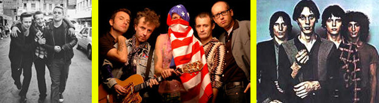

Petite histoire du punk

Le mouvement punk, comme avant lui le jazz et le rock, est avant tout la manifestation d'une contestation sociale et culturelle. Dans les années 70, aux Etats-Unis puis en Europe, une nouvelle génération d'artistes musiciens rompt avec le rock hérité des années 60 pour exprimer dans une musique plus brute ses incertitudes quant à l'avenir (exclusion sociale, guerres, crise pétrolière) et son rejet de l'ordre établi.
Les célèbres slogans "No future", "Anarchy" ou encore "Punk is not dead" cristallisent alors les frustrations d'une frange de la jeunesse qui malgré tout réussit à transformer son désespoir et sa vitalité en un mouvement culturel inédit : le punk !
Les prémisses du "punk" apparaissent dans les Etats-Unis du début des années 70. Alors que la vague hippie déferle déjà depuis quelques années, nombreux sont les jeunes américains qui s'initient dans leur garage aux joies de la musique. Parmi eux, une jeune génération d'artistes opère une rupture avec un rock devenu, selon elle, trop conventionnel et propose une musique plus basique (mais très travaillée) et des textes plus subversifs. C'est ce qu'on appellera le "Garage punk". Parmi les pionniers du genre on retrouve quelques têtes, aujourd'hui (très) connues : les Velvet Underground (1967), Iggy (Pop) et les Stooges (premier concert en 1967), MC5 (1969), The New-York Dolls (1970), Patti Smith?
L'explosion britannique

cette musique est exportée vers le milieu des années 70 sur le sol britannique, il y a un choc. Les jeunes anglais s'approprient immédiatement et plus radicalement les codes du mouvement américain. Les arrangements musicaux minimalistes sont encore plus agressifs, le jeu de scène vire souvent à la bagarre générale, le style vestimentaire devient ultra provoc et les textes remettent explicitement en question les valeurs culturelles de bienséance et de respect de l'ordre établi.
Cette mutation du "Garage punk" en punk a lieu en 1977. L'électrochoc vient du groupe The Sex Pistols, mené par le chanteur Johnny Rotten et son bassiste, Sid Vicious. Ce dernier, par ses excès et son style de vie, deviendra malgré lui l'icône mondial du mouvement punk.
En une année, la vague punk se transforme alors en tsunami. Les Sex Pistols entraînent dans leur sillage toute une génération de jeunes britanniques révoltés et talentueux parmi lesquels on compte les Clash, les Stranglers, Damned ou encore Buzzcocks, pour ne citer que les lus connus.
Le punk "made in France"
France, le punk arrivera un peu plus tard, après 1976, par des groupes comme Asphalt Jungle, le groupe de Patrick Eudeline, Métal Urbain ou, plus tard, Bérurier Noir, Burning Heads ou encore les Wampas.